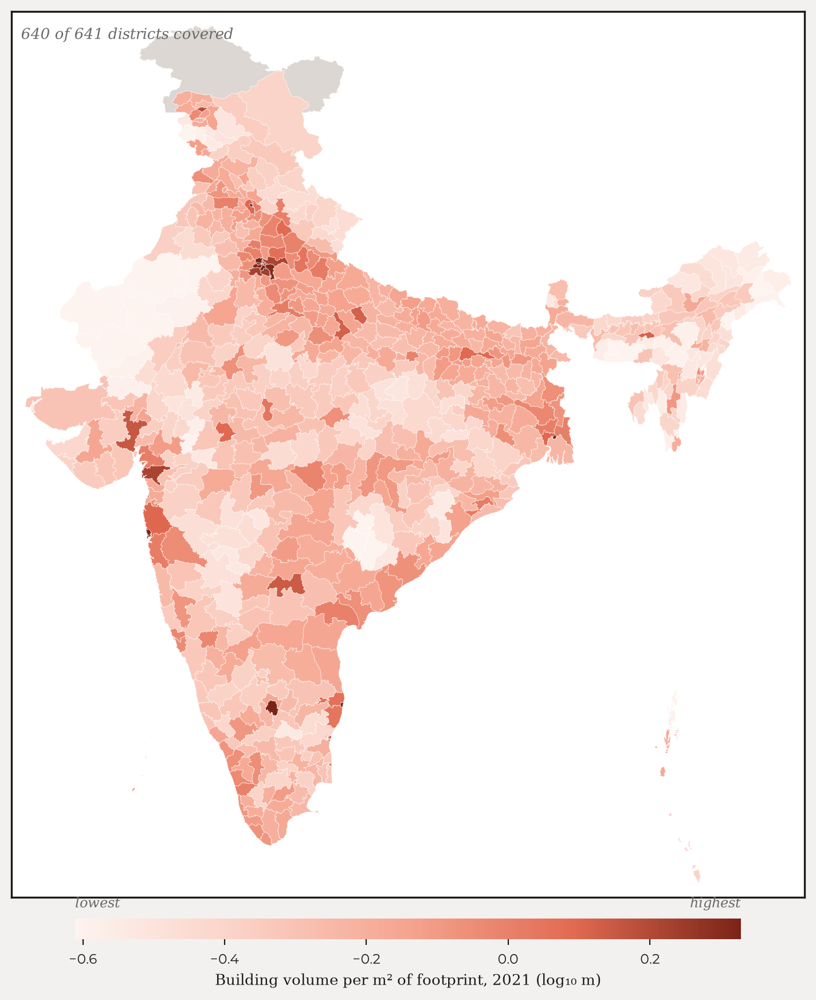
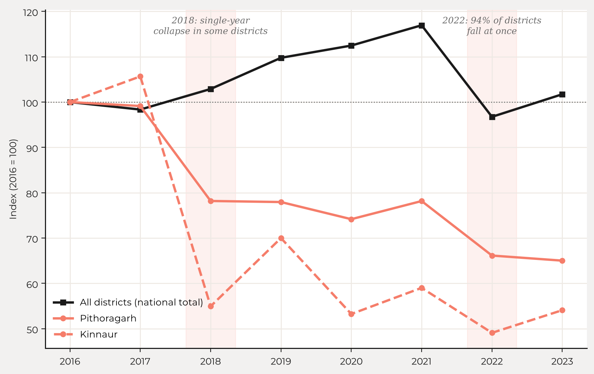
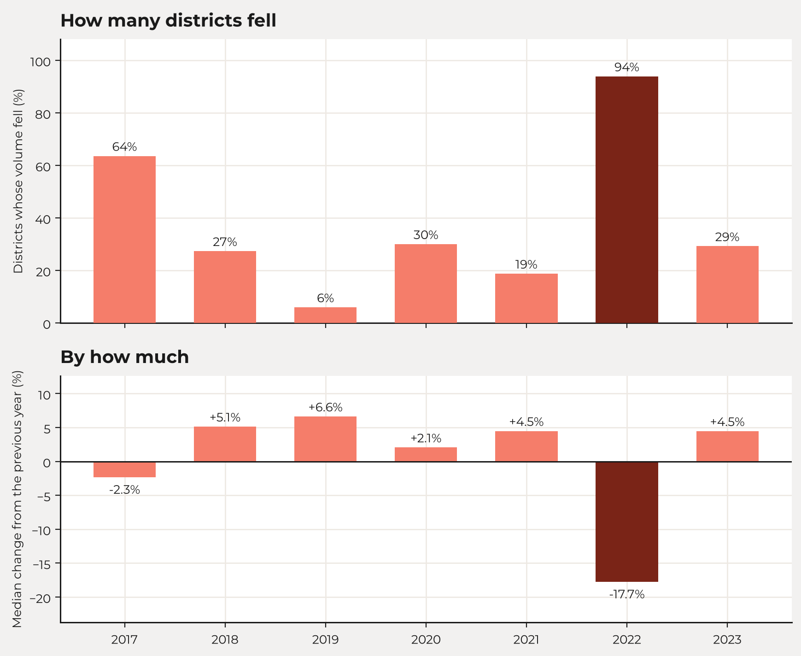
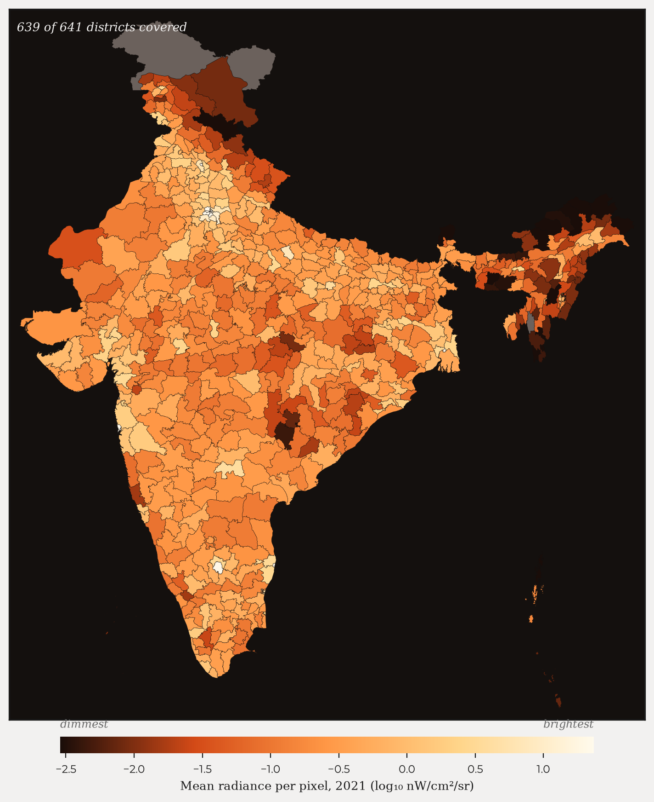
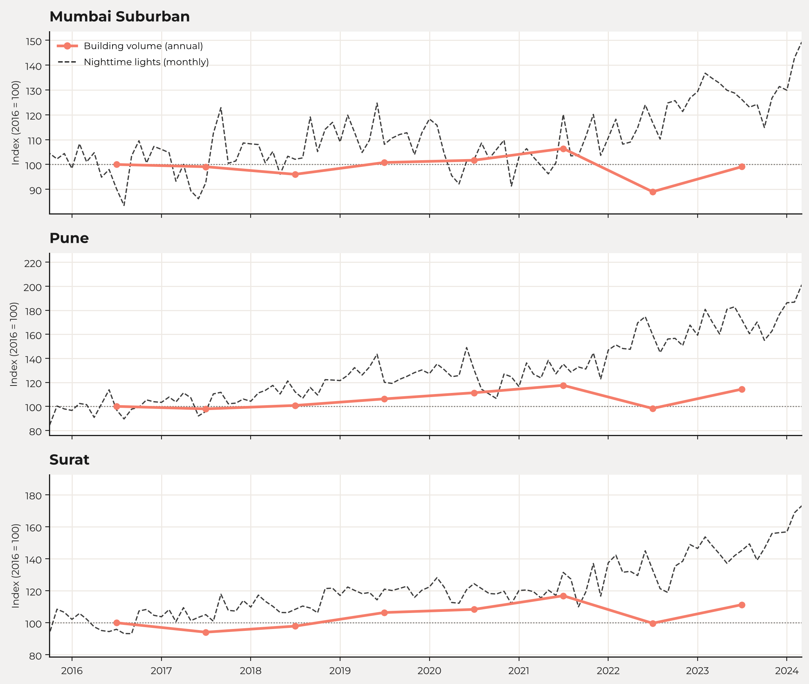
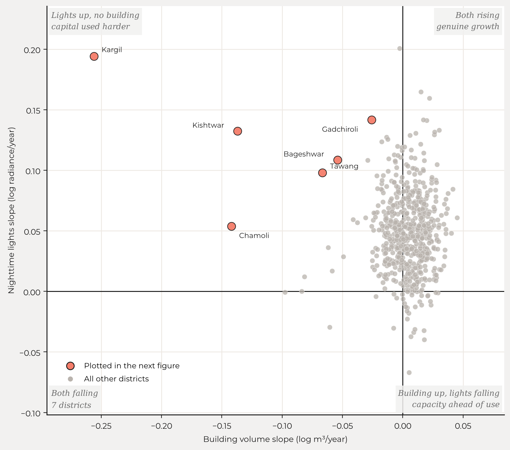
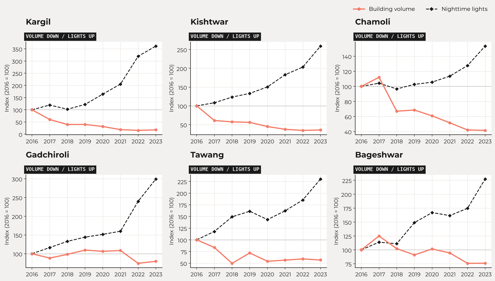
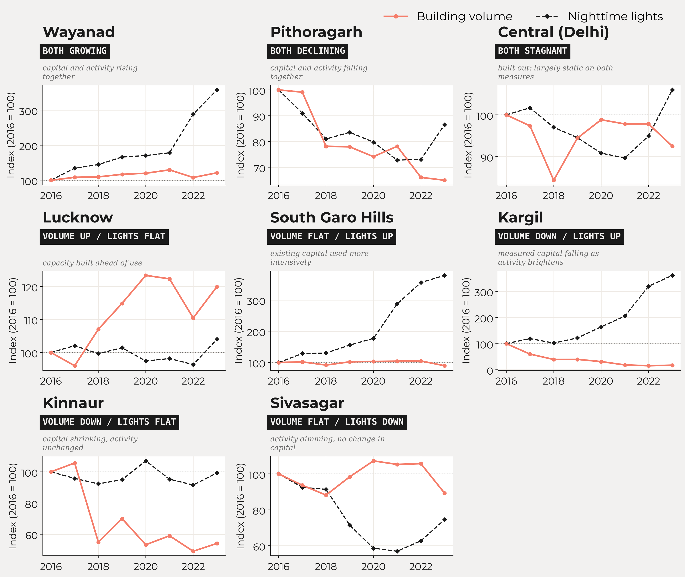

By [AUTHOR NAME]. Comparing how fast two Indian districts are growing is more frustrating than it ought to be.
While India's statistical machinery does produce a staggering quantity of data, it is rarely cooperative. It is often outdated, available at inconvenient resolutions, and occasionally simply absent. We know relatively little about how economic activity changes from one district to another in real time. We know even less about something as fundamental as the stock of physical capital.
There is no official district-level measure of how much has been built, or how quickly the built-up environment is changing. Yet infrastructure, industrial concentration, and urban growth—the very indicators that matter most for public policy—are determined at the sub-state level. For example, Lall and Chakravorty (2005) find that the spatial concentration of industry within India is itself a primary cause of income inequality across regions, and that concentration happens at a resolution finer than the state. Aggregated, lagged statistics hide much of the story.
Satellite data offers a solution to this problem.
Every few days, satellites record the changing surface of the Earth. Buildings appear, urban centres expand, industrial enclaves emerge, and come sunset settlements brighten or dim as economic activity ebbs and flows. None of this was designed as an economic indicator, but together these traces reveal patterns of economic development that were previously impossible to observe. The idea has a solid pedigree: Henderson, Storeygard and Weil (2012) used the growth of nighttime lights to measure economic growth in places where the national accounts are weak, and Chen and Nordhaus (2011) worked out the conditions under which luminosity adds information to conventional statistics rather than merely restating them.
Unfortunately, working with satellite data is its own can of worms. The raw images arrive in esoteric formats, and they have to be normalised and bias corrected for myriad factors before they are usable. Anyone hoping for a drop-in proxy for economic activity will soon find themselves in need of not only a crash course in satellite imagery, but ideally a supercomputer to process it.
That is what our new district-level dataset for India draws on: two processed, ready-to-use satellite datasets (and the pipelines that created them), tracked separately, which between them give a bird's eye view of a district's capital and economic activity.
The first is annual building volume, taken from Google's Open Buildings 2.5D Temporal dataset. Built from Sentinel-2 imagery at an effective resolution of 4m (Sirko et al., 2023), it estimates not just where buildings stand but how tall they are, providing a proxy for accumulated physical capital, year by year, from 2016 to 2023. We resample the raw data to a 100m resolution, which processes far more quickly and is plenty for district-level analyses, and chunk the requests to avoid rate limiting. Each district-year row gives the sum of building footprints in the district, the average height per building, and total volume, which is the product of the two.
The map below shows what this looks like across the country in 2021: building volume per square metre of footprint, district by district, which is a rough measure of how tall a district builds rather than how much of it is built on. The dense corridors are visible without any further processing.

Construction is slow and cumulative, so this data moves gradually. It is less a snapshot of current activity, rather it is a record of investment: in housing, in industry, in commerce. We present the underlying data as published, without a separate cleaning pass.
That means the oddities in it are visible too. Ordinarily, one should expect a measure like this to weakly rise monotonically, but we observe an across-the-board decline in building volume in 2022. Some districts show a precipitous single-year collapse in 2018: Kinnaur's building volume falls by almost 50% and Pithoragarh's by 20%, neither of which recovers. Others decline continuously over the whole period. Building volume is computed as the product of surface area and building height, the latter of which has a hard cap of 100m, cutting off taller structures. We are working on a bias correction mechanism, using known building heights as anchors for the distribution.

The 2022 decline is not a handful of districts dragging the total down. In that year 94% of districts fell, and the median district fell by 18%.

The second is nighttime lights, from the Visible Infrared Imaging Radiometer Suite (VIIRS) (Elvidge et al., 2021), available monthly since 2014 at a 500m resolution. VIIRS gives both average radiance and a count of cloud-free images per pixel per month. Each district-year-month row gives the sum of radiance, the mean radiance per pixel, and the pixel count.
It is also notoriously difficult to work with. Bloom, background noise, outliers (from flaring gas, say) and seasonal attenuation are all well-documented problems (Patnaik, Shah and Thomas, 2022). Seasonal attenuation matters most here, because heavier cloud cover and fewer cloud-free images bias radiance downwards in cloudy months. There is also a marked and poorly explained correlation between cloud-free images and radiance (Patnaik et al., 2021), and correcting for it is a significant job that new users may not know they need to do. We take the raw data, batch process it with the PSTT2021 pipeline of Patnaik et al. (2021) as implemented in NighttimeLights.jl, which corrects a majority of these issues, and aggregate to district level.
The same districts and the same year as the building map earlier, now seen in radiance rather than in concrete. The bright regions match well, but not exactly, with the densely built ones—the Gangetic plain and the southern coasts—light up more than their building stock alone would suggest, and parts of the interior less. That gap is the whole reason for carrying both measures.

Lights respond much more quickly than buildings. They brighten as neighbourhoods become more active and dim when activity slows. If buildings measure accumulated capital, nighttime lights measure an economy in motion. One caveat: as household and street lighting shifts to LEDs, measured radiance can fall even where activity is rising, because LEDs emit less in the band VIIRS is sensitive to (Kyba et al., 2017). A dimmer district is not necessarily a slower one. Gibson, Olivia and Boe-Gibson (2020) survey this and the other traps in the economic use of nighttime lights, and are worth reading before treating radiance as a direct indicator of output.
The difference in tempo is easiest to see when the two are drawn on the same axis. Building volume gives eight annual points across the period; lights give twelve times as many.

Each dataset answers a straightforward question on its own. Together they answer a more useful one. Where building volume and lights are both climbing, a district is likely in the midst of genuine, sustained growth. If construction is rising but lights remain flat, it indicates new capacity being built ahead of actual use: possibly the shrewd foresight of planners anticipating development, or, at the other extreme, a ghost town left behind by overestimating demand.
Where lights rise with little new construction, existing capital might be used more intensively, rather than the district expanding outward. That points to constrained resources, limited confidence in long-term growth, or simply a choice to extract more from what is already there.

Revisiting the six districts above in more detail, we see measured building volume appear to fall while the lights climb.

Sorting every district on both axes gives nine combinations of rising, flat and falling volume and lights, of which eight are occupied: no district builds while its lights dim. The chart below shows the starkest district in each: Wayanad, where building volume and lights climbed together; Pithoragarh, where both fell; Lucknow, where construction ran ahead of measured activity; and so on through the remaining five.

We built this dataset to make these kinds of questions easier to ask, at a scale India's official statistics don't reach: the district, updated annually or monthly instead of once a decade. Beyer, Chhabra, Galdo and Rama (2018) showed what that resolution buys: working with cleaned VIIRS at the district level, they traced the effect of demonetisation on Indian districts month by month, an episode that state-level annual data would have largely smoothed away. Seth, Singh and Uday (2026) go finer still: working with building volume inside urban local body boundaries in Karnataka, and find that the summed building volume of a body explains much of the variation in property tax demand, a satellite measure becoming a way for municipalities to verify what they report about themselves. Our dataset should be useful to researchers working on regional inequality, urbanisation and the geography of growth, and to anyone in government trying to keep track of places where the usual numbers arrive too late (if at all).
Economic development leaves visible traces on the landscape long before it reaches official databases. Our hope is that this dataset makes them usable. The data is available as CSVs (BV, NL, and district bounds). The processing pipeline is public and runs end to end in two Colab notebooks, one for building volume and one for nighttime lights. Note that the provided nightlights CSV was computed at native resolution, while the notebook downsamples to remain within colab's usage limits. Swap the geography to point it at a different country or a different administrative boundary, and the pipelines will cooperate.
Measuring districts' monthly economic activity from outer space, Robert Beyer, Esha Chhabra, Virgilio Galdo and Martin Rama, World Bank Policy Research Working Paper No. 8523, July 2018.
Using luminosity data as a proxy for economic statistics, Xi Chen and William D. Nordhaus, Proceedings of the National Academy of Sciences, Vol. 108, No. 21, May 2011.
VIIRS night-time lights, Christopher D. Elvidge, Kimberly Baugh, Mikhail Zhizhin, Feng Chi Hsu and Tilottama Ghosh, in Remote Sensing of Night-time Light, Routledge, 2021.
Night lights in economics: Sources and uses, John Gibson, Susan Olivia and Geua Boe-Gibson, Journal of Economic Surveys, Vol. 34, No. 5, December 2020.
Measuring economic growth from outer space, J. Vernon Henderson, Adam Storeygard and David N. Weil, American Economic Review, Vol. 102, No. 2, April 2012.
Artificially lit surface of Earth at night increasing in radiance and extent, Christopher C. M. Kyba and others, Science Advances, Vol. 3, No. 11, November 2017.
Industrial location and spatial inequality: Theory and evidence from India, Somik V. Lall and Sanjoy Chakravorty, Review of Development Economics, Vol. 9, No. 1, February 2005.
But clouds got in my way: Bias and bias correction of VIIRS nighttime lights data in the presence of clouds, Ayush Patnaik, Ajay Shah, Anshul Tayal and Susan Thomas, xKDR Forum Working Paper No. 7, October 2021.
Foundations for nighttime lights data analysis, Ayush Patnaik, Ajay Shah and Susan Thomas, xKDR Forum Working Paper No. 19, December 2022.
Estimating property tax potential in urban local bodies using satellite imagery, Abhishek Seth, Manish K. Singh and Diya Uday, XKDR Forum Working Paper No. 47, March 2026.
High-resolution building and road detection from Sentinel-2, Wojciech Sirko, Emmanuel Asiedu Brempong, Juliana T. C. Marcos, Abigail Annkah, Abel Korme, Mohammed Alewi Hassen, Krishna Sapkota, Tomer Shekel, Abdoulaye Diack, Sella Nevo and others, arXiv:2310.11622, 2023.
[AUTHOR NAMES] are [BLANK]. Thanks to [BLANK] for comments.